Oso Polar
El oso polar es una especie de mamífero del orden carnívoro. Rivaliza con su pariente, el oso Kodiak, por el título de carnívoro terrestre más grande de la Tierra. Vive en el medio polar y zonas heladas del Hemisferio Norte. Es el único superdepredador del Ártico.
Los machos adultos de oso polar llegan a alcanzar los 3 metros en posición bípeda, y llegar a pesar 630 kg.
Peligro de extinción
Depredadores
El ser humano y el CO2 provocado por los humanos